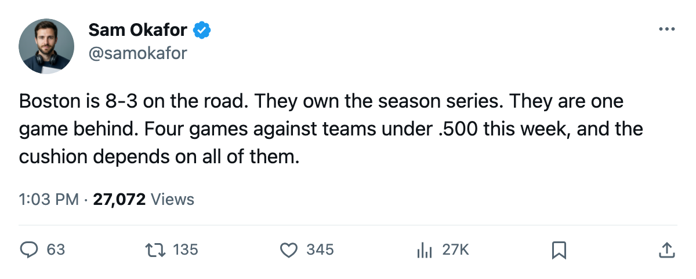

TOR
TOR BOS
BOS OTT
OTT WSH
WSH PHI
PHI BUF
BUFNortheast Race: Boston is 1 game behind, owns the series, and plays 3 in 6 days
The Bruins' 8-3 road record and a head-to-head lead mean Toronto needs to treat this week as a point-a-game minimum
 Sam OkaforLeafs beat reporter · Queen City Telegram
Sam OkaforLeafs beat reporter · Queen City Telegram
Boston sits 3 points behind Toronto in the Northeast with a game in hand. The Bruins are 11-4-3 in 19 games, 27 points. Toronto is 12-5-0 in 20, 30 points. The gap is 3, the games-played difference is 1, and the head-to-head series reads 2-0-0 to Boston.
If the two clubs finish tied on points, Boston wins the division.
The schedule overlap
Boston's next three come in 6 days: Calgary at home Saturday, Montreal on the road Tuesday, Pittsburgh at home Wednesday. Toronto's next four come in 6 days: Ottawa on the road Friday, Washington at home Saturday, Philadelphia on the road Tuesday, Buffalo at home Wednesday.
| Club | Next games | Dates | Opponents' combined record |
|---|---|---|---|
| TOR | 4 | Nov 25 to Nov 30 | 24-45-7 |
| BOS | 3 | Nov 26 to Nov 30 | 20-26-6 |
Calgary is 8-8-1, a .500 team. Montreal is 6-8-3 and on a 3-game win streak. Pittsburgh is 8-4-2 and on a 3-game loss streak. Boston's schedule in this window is harder than Toronto's, but not by much, and Boston owns the head-to-head.
The road problem
Boston is 8-3 on the road, the best away record in the division. Toronto is 5-1 on the road, better in percentage but with seven fewer games. Their 2-0 record against Toronto this season was set in Toronto, a 3-2 win on November 19. The earlier meeting, also in Toronto, went 3-2 to Boston in regulation.
The next meeting between the clubs is January 7. Until then, the two clubs just play other teams.
What Toronto needs
Four games against sub-.500 opponents. Ottawa is 6-9-2 and missing  Zdeno Chara80 and
Zdeno Chara80 and  Wade Redden79. Washington is 5-10-3 with a 4-8 road record. Philadelphia is 9-8-1 and on a 2-game skid, but they outshot Toronto 33-20 on Wednesday. Buffalo is 4-10-2, the worst team in the division, missing
Wade Redden79. Washington is 5-10-3 with a 4-8 road record. Philadelphia is 9-8-1 and on a 2-game skid, but they outshot Toronto 33-20 on Wednesday. Buffalo is 4-10-2, the worst team in the division, missing  Tim Connolly80 until November 30.
Tim Connolly80 until November 30.
Eight points from these four games puts Toronto at 38. Boston at 33 with a maximum of 6 points from their three puts them at 33 in 22. That is a 5-point cushion, which is the smallest lead that can survive a two-game slide in this division. Anything less than 6 points from this stretch and the cushion goes back to 2 or 3.
Toronto has been in the lead since early November. Boston is 8-3 on the road and owns the series. The question is whether the lead survives November.
